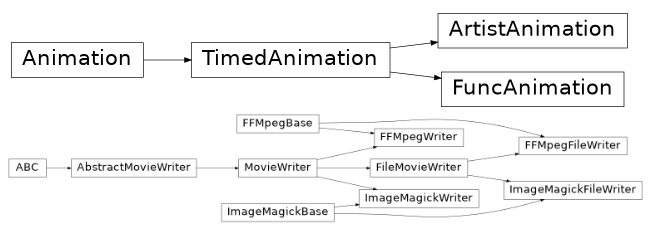
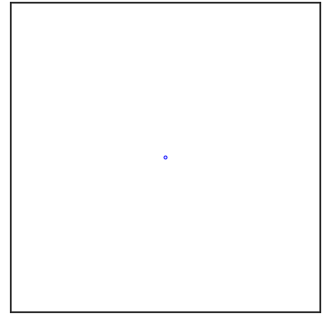
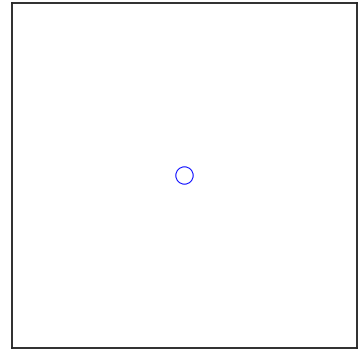
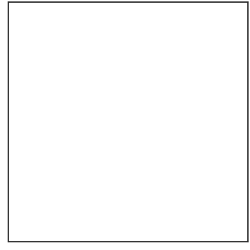
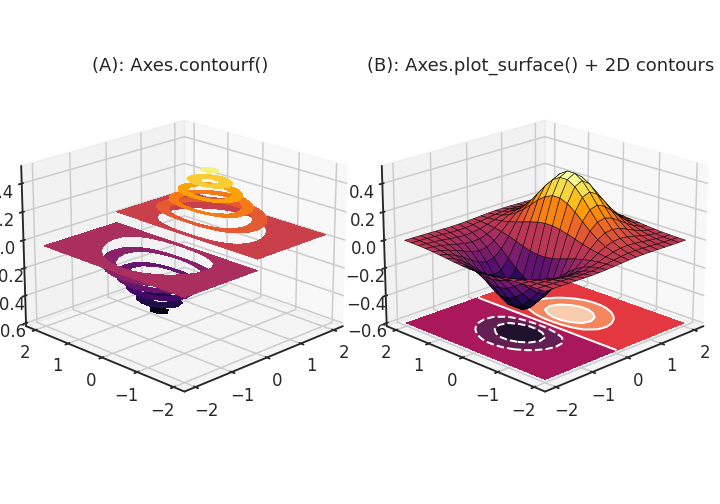
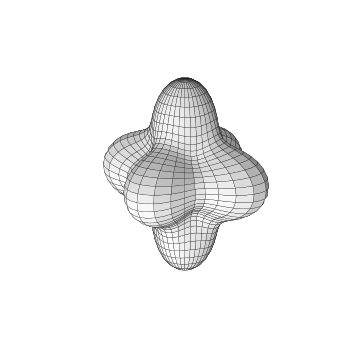

- 정지된 그림으로는 볼 수 없는 것들이 있습니다.
- 시간에 따른 변화나 입체 도형의 뒷면이 그것입니다.
- 애니메이션을 활용해 이를 보완합니다.
1. Matplotlib animation

- Matplotlib에서 사용할 수 있는 애니메이션은 두 가지가 있습니다.
- Artist 객체 변화를 저장하는
ArtistAnimation, - Figure 전체의 변화를 저장하는
FuncAnimation이 그 것입니다.
1.1. base figure
간단한 그림을 그려서 애니메이션으로 만듭니다.
가운데 동그라미를 하나 그리고, 이 동그라미가 점점 커지는 모습을 구현합니다.
기본 명령어를 사용해 화면 한가운데 동그라미를 그립니다.
1
2
3
4
5
6
7
8
9
10
11
12
13
14
15
16
17# 기본 설정
%matplotlib inline
import matplotlib.pyplot as plt
import seaborn as sns
import numpy as np
import pandas as pd
sns.set_context("talk")
sns.set_style("ticks")
sns.set_palette("colorblind")
# 가운데 동그라미 점 하나
fig, ax = plt.subplots(figsize=(5, 5), constrained_layout=True)
ax.set(xlim=(-1, 1), ylim=(-1, 1), xticks=[], yticks=[])
circle = ax.scatter(0, 0, s=10, lw=1, ec="b", fc="none")
객체 지향 방식을 사용해 이 객체의 크기를 바꾸겠습니다.
circle이라는 이름으로 저장한 marker 하나는 collections로 다루어집니다.
.set_sizes()에 list 형태로 새로운 size를 전달하여 크기를 변경합니다.marker가 하나밖에 없으므로 원소가 하나뿐인 list를 입력합니다.
이를
update()라는 이름의 함수로 만들어 적용합니다.1
2
3
4
5
6
7
8
9# marker 크기 변경 함수
def update(frame_number):
circle.set_sizes([frame_number*30])
# marker 크기
update(10)
# 화면 출력
display(fig)
화면 가운데 있는 원이 커졌습니다.
이제 연속적으로 적용하고 .gif 파일로 적용하면 애니메이션이 됩니다.
1.2. FuncAnimation
- frame마다 변하는 Figure 차례로 저장해 애니메이션으로 만듭니다.
- Figure 객체에 위에서 만든
update()같은 함수를 연속적으로 적용합니다. - 이 때 사용하는 함수가
FuncAnimation이고, Figure 객체, 함수와 함께frames에 총 프레임을 넣고, intervals에 frame 사이 시간 간격을 ms단위로 입력합니다.- 위 두 코드 뒤에
FuncAnimation한 줄을 추가하고,.save()로 파일로 저장합니다.1
2
3
4
5
6
7
8
9
10
11
12
13
14
15
16
17
18
19
20from matplotlib.animation import FuncAnimation
fig, ax = plt.subplots(figsize=(5, 5), constrained_layout=True)
# Axes 주변부 요소 삭제
ax.set(xlim=(-1, 1), ylim=(-1, 1), xticks=[], yticks=[])
# scatter marker 생성
circle = ax.scatter(0, 0, s=10, lw=3, ec="b", fc="none")
# animation frame마다 적용되는 변화
def update(frame_number):
# size 변경
circle.set_sizes([frame_number*500])
# animation 객체 생성
anim = FuncAnimation(fig, update, frames=120, interval=5)
# animation을 gif로 저장
anim.save("FuncAni0.gif", fps=24)
1.3. ArtistAnimation
조금 다른 방식으로 artist 객체의 변화를 저장해 animation을 만들 수 있습니다.
Artist에 변화를 준 내용을 list로 저장해서
ArtistAnimation()에 전달하는 방식입니다.FuncAnimation()에는 함수를 전달했던 것과 다른 방식입니다.함수로 표현하기 어려운 급격한 변화도 담을 수 있지만 리스트가 담길 메모리는 다소 부담이 됩니다.
1
2
3
4
5
6
7
8
9
10
11
12
13
14
15
16
17
18
19
20
21
22
23
24from matplotlib.animation import ArtistAnimation
fig, ax = plt.subplots(figsize=(5, 5), constrained_layout=True)
# Axes 주변부 요소 삭제
ax.set(xlim=(-1, 1), ylim=(-1, 1), xticks=[], yticks=[])
# animation frame마다 적용되는 변화
circles = []
for frame_number in range(120):
# scatter marker 생성
circle = ax.scatter(0, 0, s=10, lw=3, ec="b", fc="none")
# size 변경
circle.set_sizes([frame_number*500])
# artist list 추가
circles.append([circle])
# animation 객체 생성
anim = ArtistAnimation(fig, circles, interval=5)
# animation을 gif로 저장
anim.save("ArtistAni0.gif", fps=24)같은 애니메이션을 구현했습니다.
2. 3D 도형 시각화 적용
2.1. z axis 주변 회전
원래의 목적인 3D 도형의 뒷면을 보여주는 시각화를 수행합니다.
Matplotlib 공식 홈페이지에 있는 구조를 가져와 다른 방식으로 그립니다.
Axes.contourf()를 3D Axes에 표현해보고,다른 공간에는
Axes.plot_surface()와 함께 아래 면을 사용합니다.1
2
3
4
5
6
7
8
9
10
11
12
13
14
15
16
17
18
19
20
21# 2D mesh grid
xx, yy = np.mgrid[-2:2:20j, -2:2:20j]
zz = xx*np.exp(-(xx)**2-yy**2)
# 3D visualization
fig, axs = plt.subplots(ncols=2, figsize=(10, 7), constrained_layout=True,
subplot_kw={"projection":"3d"})
# (A): filled 3D contour
axs[0].contourf(xx, yy, zz, cmap="inferno", levels=10)
# (B): 3D surface plot + 2D contour
axs[1].plot_surface(xx, yy, zz, cmap="inferno", ec="k", linewidths=0.5)
axs[1].contourf(xx, yy, zz, zdir="z", offset=-0.6)
axs[1].contour(xx, yy, zz, zdir="z", offset=-0.6, linewidths=2, colors=["w"])
titles = ["(A): Axes.contourf()", "(B): Axes.plot_surface() + 2D contours"]
for ax, title in zip(axs, titles):
ax.view_init(azim=225, elev=20)
ax.set_zlim(-0.6, 0.5)
ax.set_title(title, pad=0)
제법 멋진 그림이 그려졌지만 뒷부분이 보이지 않습니다.
한 frame에 2도씩, 두 그림 모두 회전시킵니다. 180 frame을 적용해 한바퀴를 돌립니다.
1
2
3
4
5
6
7
8
9
10# animation frame마다 적용되는 변화
def update(frame_number):
axs[0].view_init(azim=225 + frame_number*2)
axs[1].view_init(azim=225 + frame_number*2)
# animation 객체 생성
anim = FuncAnimation(fig, update, frames=180, interval=5)
# animation을 gif로 저장
anim.save("FuncAni1.gif", fps=24)
빙글빙글 돌아가는 모습이 표현됩니다.
2.2. 3D 회전
이번에는 조금 더 자유롭게 회전시켜보겠습니다.
Axes.view_init()에 들어가는 두 개의 인자,elev와azim에 랜덤으로 만든 array를 입력하면 됩니다.돌려보는 재미가 있는 3D 객체를 생성합니다. 오른쪽 Ni 그림을 사용합니다.
과거 글에 있는 그림을 사용합니다.

핵심 코드만 가져옵니다.
잘려진 부분 없이 온전한 모습으로 그립니다.
1
2
3
4
5
6
7
8
9
10
11
12
13
14
15
16
17
18
19
20
21
22
23
24
25
26
27
28
29
30
31
32
33
34
35
36
37
38
39
40
41
42
43from itertools import product
from matplotlib.colors import LightSource
# angles
polars = np.linspace(0, 179, 37)
azimuths = np.linspace(0, 360, 73)
df = pd.DataFrame(product(polars, azimuths), columns=["azi", "polar"])
df["x"] = df.apply(lambda x: np.cos(np.deg2rad(x[1]))*np.sin(np.deg2rad(x[0])), axis=1)
df["y"] = df.apply(lambda x: np.sin(np.deg2rad(x[1]))*np.sin(np.deg2rad(x[0])), axis=1)
df["z"] = df.apply(lambda x: np.cos(np.deg2rad(x[0])), axis=1)
# 3D 객체 생성
K1_Ni = -0.5
K2_Ni = -0.2
def calc_uni(K1, K2, df):
return K1*(df["x"]**2 + df["y"]**2)
def calc_cubic(K1, K2, df):
return K1*(df["x"]**2 * df["y"]**2 + \
df["y"]**2 * df["z"]**2 + \
df["z"]**2 * df["x"]**2) + \
K2*(df["x"]**2 * df["y"]**2 * df["z"]**2)
df["E_Ni"] = df.apply(lambda x: calc_cubic(K1_Ni, K2_Ni, x), axis=1)*3 +1
# 극좌표계를 직교좌표계로 변환
df["x_Ni"] = df["E_Ni"] * df["x"]
df["y_Ni"] = df["E_Ni"] * df["y"]
df["z_Ni"] = df["E_Ni"] * df["z"]
fig, ax = plt.subplots(figsize=(5, 5), constrained_layout=True,
subplot_kw={"projection": "3d"})
ax.plot_surface(df[f"x_Ni"].values.reshape((37, 73)),
df[f"y_Ni"].values.reshape((37, 73)),
df[f"z_Ni"].values.reshape((37, 73)),
ec="k", lw=0.2,
color="w", lightsource=LightSource(0, 10))
ax.set_box_aspect((1, 1, 1))
elev0, azim0 = 20, -60
ax.view_init(elev0, azim0)
ax.axis(False)
elev와azim을 미리 array로 만들어 두고,frame_number를 index로 사용해 하나씩 꺼내는 함수를 만듭니다.
그리고,
FuncAnimation()에서 이들을 호출해 애니메이션을 생성합니다.1
2
3
4
5
6
7
8
9
10
11
12
13
14frames = 360
elev = elev0 + np.random.normal(loc=3, scale=1, size=frames).cumsum()
azim = azim0 + np.random.normal(loc=3, scale=1, size=frames).cumsum()
# animation frame마다 적용되는 변화
def update(frame_number):
ax.view_init(elev[frame_number],
azim[frame_number])
# animation 객체 생성
anim = FuncAnimation(fig, update, frames=360, interval=5)
# animation을 gif로 저장
anim.save("FuncAni2.gif", fps=24)
3차원 공간을 자유롭게 회전하는 영상이 되었습니다.